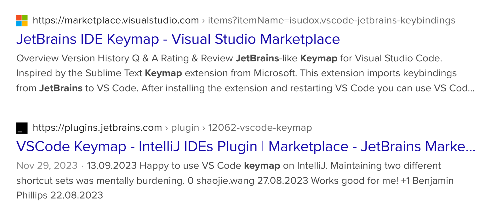

<!DOCTYPE html>
<html lang="en" dir="auto">

<head><meta charset="utf-8">
<meta http-equiv="X-UA-Compatible" content="IE=edge">
<meta name="viewport" content="width=device-width, initial-scale=1, shrink-to-fit=no">
<meta name="robots" content="index, follow">
<title>尽量使用默认设定 | thomjiji</title>
<meta name="keywords" content="">
<meta name="description" content="尽可能使用默认设定，不去做过多的自定义，不去 Tweaking 各种各样的细枝末节。这是我近期的一个感悟和追求。
之前有一段时间习惯用 JetBrains 家的 IDE，渐渐习惯它们的 keybinding。有时需要用一下 VS Code 的时候都会想，我能不能在 VS Code 里用 JetBrains 的 keybinding。或者反过来，我能不能在 JetBrains 中用 VS Code 的 keybinding。其实是可以的，我特意去搜了一下：JetBrains IDE using VS Code key map，头两个结果就是。
双方都有对应的插件，安装一下就可以使用对方的快捷键了。但可以想见的是，在 JetBrains IDE 中使用 VS Code 的 keybinding，或者在 VS Code 中使用 JetBrains keybinding 这种奇怪的组合，势必没有原生的 keybinding 好用。或者一些功能，在对方软件中根本不存在，那么就没有对应的 keybinding 可以给你用。这时你需要找到目前所在软件的对应功能，比如 VS Code 当中叫作 Expand Selection 的功能，在 JetBrains IDE 当中叫作 Extend Selection。你需要把它手动指定一个 keybinding，就开始麻烦起来了。
所以我通常的做法是在哪个软件就用哪个软件的 keybinding。而且通常来说，JetBrains、VS Code 也好，或者 Obsidian，都有一个功能可以让你搜索要执行的命令，然后它对应的快捷键就在后面。
当然有人 Vim 走天下。在哪个软件都是装个 Vim 插件，然后一套 Vim 的 keybinding 就完事了。">
<meta name="author" content="">
<link rel="canonical" href="https://thomjiji.github.io/blogs/2024/01/use-default-settings-as-possible/">
<link crossorigin="anonymous" href="/assets/css/stylesheet.2d9a79bce8a328ee336f2afea7317e82a9c4fd3be4d1e8f4cf5675d8fa221d4e.css" integrity="sha256-LZp5vOijKO4zbyr&#43;pzF&#43;gqnE/Tvk0ej0z1Z12PoiHU4=" rel="preload stylesheet" as="style">
<script defer crossorigin="anonymous" src="/assets/js/highlight.f413e19d0714851f6474e7ee9632408e58ac146fbdbe62747134bea2fa3415e0.js" integrity="sha256-9BPhnQcUhR9kdOfuljJAjlisFG&#43;9vmJ0cTS&#43;ovo0FeA="
    onload="hljs.initHighlightingOnLoad();"></script>
<link rel="icon" href="https://thomjiji.github.io/favicon.ico">
<link rel="icon" type="image/png" sizes="16x16" href="https://thomjiji.github.io/favicon-16x16.png">
<link rel="icon" type="image/png" sizes="32x32" href="https://thomjiji.github.io/favicon-32x32.png">
<link rel="apple-touch-icon" href="https://thomjiji.github.io/apple-touch-icon.png">
<link rel="mask-icon" href="https://thomjiji.github.io/safari-pinned-tab.svg">
<meta name="theme-color" content="#2e2e33">
<meta name="msapplication-TileColor" content="#2e2e33">
<link rel="alternate" hreflang="en" href="https://thomjiji.github.io/blogs/2024/01/use-default-settings-as-possible/">
<noscript>
    <style>
        #theme-toggle,
        .top-link {
            display: none;
        }

    </style>
    <style>
        @media (prefers-color-scheme: dark) {
            :root {
                --theme: rgb(29, 30, 32);
                --entry: rgb(46, 46, 51);
                --primary: rgb(218, 218, 219);
                --secondary: rgb(155, 156, 157);
                --tertiary: rgb(65, 66, 68);
                --content: rgb(196, 196, 197);
                --hljs-bg: rgb(46, 46, 51);
                --code-bg: rgb(55, 56, 62);
                --border: rgb(51, 51, 51);
            }

            .list {
                background: var(--theme);
            }

            .list:not(.dark)::-webkit-scrollbar-track {
                background: 0 0;
            }

            .list:not(.dark)::-webkit-scrollbar-thumb {
                border-color: var(--theme);
            }
        }

    </style>
</noscript><!DOCTYPE html>
<html lang="en">
  <head>
    <link rel="icon" href="https://thomjiji.github.io/powerpuff_girls_buttercup.jpg" />
    <link rel="preconnect" href="https://fonts.googleapis.com" />
    <link rel="preconnect" href="https://fonts.gstatic.com" crossorigin />
    <link
      href="https://fonts.googleapis.com/css2?family=IBM+Plex+Sans:ital,wght@0,100;0,200;0,300;0,400;0,500;0,600;0,700;1,100;1,200;1,300;1,400;1,500;1,600;1,700&family=JetBrains+Mono:ital,wght@0,100;0,200;0,300;0,400;0,500;0,600;0,700;0,800;1,100;1,200;1,300;1,400;1,500;1,600;1,700;1,800&family=Space+Grotesk:wght@300;400;500;600;700&family=Roboto+Mono:ital,wght@0,100;0,200;0,300;0,400;0,500;0,600;0,700;1,100;1,200;1,300;1,400;1,500;1,600;1,700&display=swap"
      rel="stylesheet"
    />
  </head>

  <body>
    
  </body>
</html>
<meta property="og:title" content="尽量使用默认设定" />
<meta property="og:description" content="尽可能使用默认设定，不去做过多的自定义，不去 Tweaking 各种各样的细枝末节。这是我近期的一个感悟和追求。
之前有一段时间习惯用 JetBrains 家的 IDE，渐渐习惯它们的 keybinding。有时需要用一下 VS Code 的时候都会想，我能不能在 VS Code 里用 JetBrains 的 keybinding。或者反过来，我能不能在 JetBrains 中用 VS Code 的 keybinding。其实是可以的，我特意去搜了一下：JetBrains IDE using VS Code key map，头两个结果就是。
双方都有对应的插件，安装一下就可以使用对方的快捷键了。但可以想见的是，在 JetBrains IDE 中使用 VS Code 的 keybinding，或者在 VS Code 中使用 JetBrains keybinding 这种奇怪的组合，势必没有原生的 keybinding 好用。或者一些功能，在对方软件中根本不存在，那么就没有对应的 keybinding 可以给你用。这时你需要找到目前所在软件的对应功能，比如 VS Code 当中叫作 Expand Selection 的功能，在 JetBrains IDE 当中叫作 Extend Selection。你需要把它手动指定一个 keybinding，就开始麻烦起来了。
所以我通常的做法是在哪个软件就用哪个软件的 keybinding。而且通常来说，JetBrains、VS Code 也好，或者 Obsidian，都有一个功能可以让你搜索要执行的命令，然后它对应的快捷键就在后面。
当然有人 Vim 走天下。在哪个软件都是装个 Vim 插件，然后一套 Vim 的 keybinding 就完事了。" />
<meta property="og:type" content="article" />
<meta property="og:url" content="https://thomjiji.github.io/blogs/2024/01/use-default-settings-as-possible/" /><meta property="article:section" content="posts" />
<meta property="article:published_time" content="2024-01-14T00:00:00+00:00" />
<meta property="article:modified_time" content="2024-01-14T00:00:00+00:00" />

<meta name="twitter:card" content="summary"/>
<meta name="twitter:title" content="尽量使用默认设定"/>
<meta name="twitter:description" content="尽可能使用默认设定，不去做过多的自定义，不去 Tweaking 各种各样的细枝末节。这是我近期的一个感悟和追求。
之前有一段时间习惯用 JetBrains 家的 IDE，渐渐习惯它们的 keybinding。有时需要用一下 VS Code 的时候都会想，我能不能在 VS Code 里用 JetBrains 的 keybinding。或者反过来，我能不能在 JetBrains 中用 VS Code 的 keybinding。其实是可以的，我特意去搜了一下：JetBrains IDE using VS Code key map，头两个结果就是。
双方都有对应的插件，安装一下就可以使用对方的快捷键了。但可以想见的是，在 JetBrains IDE 中使用 VS Code 的 keybinding，或者在 VS Code 中使用 JetBrains keybinding 这种奇怪的组合，势必没有原生的 keybinding 好用。或者一些功能，在对方软件中根本不存在，那么就没有对应的 keybinding 可以给你用。这时你需要找到目前所在软件的对应功能，比如 VS Code 当中叫作 Expand Selection 的功能，在 JetBrains IDE 当中叫作 Extend Selection。你需要把它手动指定一个 keybinding，就开始麻烦起来了。
所以我通常的做法是在哪个软件就用哪个软件的 keybinding。而且通常来说，JetBrains、VS Code 也好，或者 Obsidian，都有一个功能可以让你搜索要执行的命令，然后它对应的快捷键就在后面。
当然有人 Vim 走天下。在哪个软件都是装个 Vim 插件，然后一套 Vim 的 keybinding 就完事了。"/>


<script type="application/ld+json">
{
  "@context": "https://schema.org",
  "@type": "BreadcrumbList",
  "itemListElement": [
    {
      "@type": "ListItem",
      "position":  1 ,
      "name": "Posts",
      "item": "https://thomjiji.github.io/posts/"
    }, 
    {
      "@type": "ListItem",
      "position":  2 ,
      "name": "尽量使用默认设定",
      "item": "https://thomjiji.github.io/blogs/2024/01/use-default-settings-as-possible/"
    }
  ]
}
</script>
<script type="application/ld+json">
{
  "@context": "https://schema.org",
  "@type": "BlogPosting",
  "headline": "尽量使用默认设定",
  "name": "尽量使用默认设定",
  "description": "尽可能使用默认设定，不去做过多的自定义，不去 Tweaking 各种各样的细枝末节。这是我近期的一个感悟和追求。\n之前有一段时间习惯用 JetBrains 家的 IDE，渐渐习惯它们的 keybinding。有时需要用一下 VS Code 的时候都会想，我能不能在 VS Code 里用 JetBrains 的 keybinding。或者反过来，我能不能在 JetBrains 中用 VS Code 的 keybinding。其实是可以的，我特意去搜了一下：JetBrains IDE using VS Code key map，头两个结果就是。\n双方都有对应的插件，安装一下就可以使用对方的快捷键了。但可以想见的是，在 JetBrains IDE 中使用 VS Code 的 keybinding，或者在 VS Code 中使用 JetBrains keybinding 这种奇怪的组合，势必没有原生的 keybinding 好用。或者一些功能，在对方软件中根本不存在，那么就没有对应的 keybinding 可以给你用。这时你需要找到目前所在软件的对应功能，比如 VS Code 当中叫作 Expand Selection 的功能，在 JetBrains IDE 当中叫作 Extend Selection。你需要把它手动指定一个 keybinding，就开始麻烦起来了。\n所以我通常的做法是在哪个软件就用哪个软件的 keybinding。而且通常来说，JetBrains、VS Code 也好，或者 Obsidian，都有一个功能可以让你搜索要执行的命令，然后它对应的快捷键就在后面。\n当然有人 Vim 走天下。在哪个软件都是装个 Vim 插件，然后一套 Vim 的 keybinding 就完事了。",
  "keywords": [
    
  ],
  "articleBody": "尽可能使用默认设定，不去做过多的自定义，不去 Tweaking 各种各样的细枝末节。这是我近期的一个感悟和追求。\n之前有一段时间习惯用 JetBrains 家的 IDE，渐渐习惯它们的 keybinding。有时需要用一下 VS Code 的时候都会想，我能不能在 VS Code 里用 JetBrains 的 keybinding。或者反过来，我能不能在 JetBrains 中用 VS Code 的 keybinding。其实是可以的，我特意去搜了一下：JetBrains IDE using VS Code key map，头两个结果就是。\n双方都有对应的插件，安装一下就可以使用对方的快捷键了。但可以想见的是，在 JetBrains IDE 中使用 VS Code 的 keybinding，或者在 VS Code 中使用 JetBrains keybinding 这种奇怪的组合，势必没有原生的 keybinding 好用。或者一些功能，在对方软件中根本不存在，那么就没有对应的 keybinding 可以给你用。这时你需要找到目前所在软件的对应功能，比如 VS Code 当中叫作 Expand Selection 的功能，在 JetBrains IDE 当中叫作 Extend Selection。你需要把它手动指定一个 keybinding，就开始麻烦起来了。\n所以我通常的做法是在哪个软件就用哪个软件的 keybinding。而且通常来说，JetBrains、VS Code 也好，或者 Obsidian，都有一个功能可以让你搜索要执行的命令，然后它对应的快捷键就在后面。\n当然有人 Vim 走天下。在哪个软件都是装个 Vim 插件，然后一套 Vim 的 keybinding 就完事了。\n放弃使用直角引号，改回弯角引号。\n以前大学的时候，我可以说是直角引号的狂热信徒，甚至有点变成直角引号道德警察的那个意思。看到谁跟我一样使用直角引号，我就刮目相看。看到谁用弯角引号，我在心里对他有点侧目。\n但是最近我自己却默默用回了弯角引号。主要的原因我觉得可能有两个：首先是我开始觉得直角引号有点太占空间，和过于强调。引号是一种表示“引用、着重、特别用意”的符号，按道理说你把它当作一个符号处理就可以了，不论这个符号自身的形式、外在如何。但我开始越来越觉得它给我一种过于强调的感觉，因为它占据的空间比弯角引号要大。很多时候我用引号来框住某一个词，我可能没有「那么」强烈的“强调”这个词的意思。\n其次是践行我尽量使用默认设定的准则，弯角引号算是简体中文的默认设定。不管是直角引号还是弯角引号，它们都能够发挥引号的功能，对我来说就足够了。那弯角引号是简体中文的标准，我遵循这个 out-of-box 的标准。因为我只在乎它能够完成我想要的“功能”。\n除此之外我还有个小小的偏好，就是在发社交网络的时候如果要用到感叹号的时候，我往往喜欢使用英文的半角感叹号 !，而不是中文的全角感叹号！我总觉得中文的全角感叹号传递出来的色彩也太过于浓郁，很多时候我可能没有那么的感叹！只想小小的感叹一下! 当然在英文的半角感叹号后面还是会添加一个空格，和后面的语句做一个基本的区隔。\n尽可能使用默认设定，只做最基本的个性化设定。如果一个软件的默认设定不好用的话，留不住你，那么你应该放弃它。尤其在同类软件很多的情况下，你可以直接换一个选择。\n在 Vim 快速复制多行：首先 yy 复制当前行，然后按 p 粘贴到下一行，大写 P 粘贴到上一行。 跳转到行首行尾：$ 跳转到行尾，^ 跳转到行首。这个我不知道大家怎么看，我个人是觉得这两个键不太好按，就是我需要低头去找到 $ 和 ^。 关于 diw、ciw。 关于 vim surround 的问题，确实在那个视频之后我也稍微更多研究了一下。反正我觉得我还是更多从实用的角度出发，就是我要做到这件事情，在 Vim 里我如何能够做到这件事情。最后记住了这几个 keybinding： Surround with selection: S + Surround with whole line: yss Surround with one word: ysiw + 快速删除多行：dxj, x 为要向下删除的行数。或者 dxk 向上删除。 除了 ESC 之外，原来 Ctrl+[ 是自带的，不需要特别绑定。 至于有人说“你连 vim 的设计哲学都没弄明白”，我是觉得蛮肉麻的。 ",
  "wordCount" : "143",
  "inLanguage": "en",
  "datePublished": "2024-01-14T00:00:00Z",
  "dateModified": "2024-01-14T00:00:00Z",
  "mainEntityOfPage": {
    "@type": "WebPage",
    "@id": "https://thomjiji.github.io/blogs/2024/01/use-default-settings-as-possible/"
  },
  "publisher": {
    "@type": "Organization",
    "name": "thomjiji",
    "logo": {
      "@type": "ImageObject",
      "url": "https://thomjiji.github.io/favicon.ico"
    }
  }
}
</script>
</head>

<body class="" id="top">
<script>
    if (localStorage.getItem("pref-theme") === "dark") {
        document.body.classList.add('dark');
    } else if (localStorage.getItem("pref-theme") === "light") {
        document.body.classList.remove('dark')
    } else if (window.matchMedia('(prefers-color-scheme: dark)').matches) {
        document.body.classList.add('dark');
    }

</script>

<header class="header">
    <nav class="nav">
        <div class="logo">
            <a href="https://thomjiji.github.io/" accesskey="h" title="thomjiji (Alt + H)">thomjiji</a>
            <div class="logo-switches">
                <button id="theme-toggle" accesskey="t" title="(Alt + T)">
                    <svg id="moon" xmlns="http://www.w3.org/2000/svg" width="24" height="18" viewBox="0 0 24 24"
                        fill="none" stroke="currentColor" stroke-width="2" stroke-linecap="round"
                        stroke-linejoin="round">
                        <path d="M21 12.79A9 9 0 1 1 11.21 3 7 7 0 0 0 21 12.79z"></path>
                    </svg>
                    <svg id="sun" xmlns="http://www.w3.org/2000/svg" width="24" height="18" viewBox="0 0 24 24"
                        fill="none" stroke="currentColor" stroke-width="2" stroke-linecap="round"
                        stroke-linejoin="round">
                        <circle cx="12" cy="12" r="5"></circle>
                        <line x1="12" y1="1" x2="12" y2="3"></line>
                        <line x1="12" y1="21" x2="12" y2="23"></line>
                        <line x1="4.22" y1="4.22" x2="5.64" y2="5.64"></line>
                        <line x1="18.36" y1="18.36" x2="19.78" y2="19.78"></line>
                        <line x1="1" y1="12" x2="3" y2="12"></line>
                        <line x1="21" y1="12" x2="23" y2="12"></line>
                        <line x1="4.22" y1="19.78" x2="5.64" y2="18.36"></line>
                        <line x1="18.36" y1="5.64" x2="19.78" y2="4.22"></line>
                    </svg>
                </button>
                <ul class="lang-switch"><li>|</li>
                    <li>
                        <a href="https://thomjiji.github.io/%E4%B8%AD%E6%96%87/" title="Chinese"
                            aria-label="Chinese">中文</a>
                    </li>
                </ul>
            </div>
        </div>
        <ul id="menu">
            <li>
                <a href="https://thomjiji.github.io/about/" title="About">
                    <span>About</span>
                </a>
            </li>
            <li>
                <a href="https://thomjiji.github.io/archives/" title="Archives">
                    <span>Archives</span>
                </a>
            </li>
            <li>
                <a href="https://thomjiji.github.io/search/" title="Search (Alt &#43; /)" accesskey=/>
                    <span>Search</span>
                </a>
            </li>
            <li>
                <a href="https://thomjiji.github.io/tags/" title="Tags">
                    <span>Tags</span>
                </a>
            </li>
        </ul>
    </nav>
</header>
<main class="main">

<article class="post-single">
  <header class="post-header">
    <div class="breadcrumbs"><a href="https://thomjiji.github.io/">Home</a>&nbsp;»&nbsp;<a href="https://thomjiji.github.io/posts/">Posts</a></div>
    <h1 class="post-title entry-hint-parent">
      尽量使用默认设定
      <span class="entry-hint" title="Draft">
        <svg xmlns="http://www.w3.org/2000/svg" height="35" viewBox="0 -960 960 960" fill="currentColor">
          <path
            d="M160-410v-60h300v60H160Zm0-165v-60h470v60H160Zm0-165v-60h470v60H160Zm360 580v-123l221-220q9-9 20-13t22-4q12 0 23 4.5t20 13.5l37 37q9 9 13 20t4 22q0 11-4.5 22.5T862.09-380L643-160H520Zm300-263-37-37 37 37ZM580-220h38l121-122-18-19-19-18-122 121v38Zm141-141-19-18 37 37-18-19Z" />
        </svg>
      </span>
    </h1>
    <div class="post-meta"><span title='2024-01-14 00:00:00 +0000 UTC'>2024-01-14</span>&nbsp;|&nbsp;<a href="https://github.com/thomjiji/thomjiji.github.io/tree/main/content//posts/2024-01-14_use_default_settings_as_possible/index.md" rel="noopener noreferrer" target="_blank">Suggest Changes</a>

</div>
  </header> 
  <div class="post-content"><p>尽可能使用默认设定，不去做过多的自定义，不去 Tweaking 各种各样的细枝末节。这是我近期的一个感悟和追求。</p>
<p>之前有一段时间习惯用 JetBrains 家的 IDE，渐渐习惯它们的 keybinding。有时需要用一下 VS Code 的时候都会想，我能不能在 VS Code 里用 JetBrains 的 keybinding。或者反过来，我能不能在 JetBrains 中用 VS Code 的 keybinding。其实是可以的，我特意去搜了一下：JetBrains IDE using VS Code key map，头两个结果就是。</p>
<p>
</p>
<p>双方都有对应的插件，安装一下就可以使用对方的快捷键了。但可以想见的是，在 JetBrains IDE 中使用 VS Code 的 keybinding，或者在 VS Code 中使用 JetBrains keybinding 这种奇怪的组合，势必没有原生的 keybinding 好用。或者一些功能，在对方软件中根本不存在，那么就没有对应的 keybinding 可以给你用。这时你需要找到目前所在软件的对应功能，比如 VS Code 当中叫作 Expand Selection 的功能，在 JetBrains IDE 当中叫作 Extend Selection。你需要把它手动指定一个 keybinding，就开始麻烦起来了。</p>
<p>所以我通常的做法是在哪个软件就用哪个软件的 keybinding。而且通常来说，JetBrains、VS Code 也好，或者 Obsidian，都有一个功能可以让你搜索要执行的命令，然后它对应的快捷键就在后面。</p>
<p>当然有人 Vim 走天下。在哪个软件都是装个 Vim 插件，然后一套 Vim 的 keybinding 就完事了。</p>
<hr>
<p>放弃使用直角引号，改回弯角引号。</p>
<p>以前大学的时候，我可以说是直角引号的狂热信徒，甚至有点变成直角引号道德警察的那个意思。看到谁跟我一样使用直角引号，我就刮目相看。看到谁用弯角引号，我在心里对他有点侧目。</p>
<p>但是最近我自己却默默用回了弯角引号。主要的原因我觉得可能有两个：首先是我开始觉得直角引号有点太占空间，和过于强调。引号是一种表示“引用、着重、特别用意”的符号，按道理说你把它当作一个符号处理就可以了，不论这个符号自身的形式、外在如何。但我开始越来越觉得它给我一种过于强调的感觉，因为它占据的空间比弯角引号要大。很多时候我用引号来框住某一个词，我可能没有「那么」强烈的“强调”这个词的意思。</p>
<p>其次是践行我尽量使用默认设定的准则，弯角引号算是简体中文的默认设定。不管是直角引号还是弯角引号，它们都能够发挥引号的功能，对我来说就足够了。那弯角引号是简体中文的标准，我遵循这个 out-of-box 的标准。因为我只在乎它能够完成我想要的“功能”。</p>
<p>除此之外我还有个小小的偏好，就是在发社交网络的时候如果要用到感叹号的时候，我往往喜欢使用英文的半角感叹号 !，而不是中文的全角感叹号！我总觉得中文的全角感叹号传递出来的色彩也太过于浓郁，很多时候我可能没有那么的感叹！只想小小的感叹一下! 当然在英文的半角感叹号后面还是会添加一个空格，和后面的语句做一个基本的区隔。</p>
<hr>
<p>尽可能使用默认设定，只做最基本的个性化设定。如果一个软件的默认设定不好用的话，留不住你，那么你应该放弃它。尤其在同类软件很多的情况下，你可以直接换一个选择。</p>
<hr>
<ol>
<li>在 Vim 快速复制多行：首先 <code>yy</code> 复制当前行，然后按 <code>p</code> 粘贴到下一行，大写 <code>P</code> 粘贴到上一行。</li>
<li>跳转到行首行尾：<code>$</code> 跳转到行尾，<code>^</code> 跳转到行首。这个我不知道大家怎么看，我个人是觉得这两个键不太好按，就是我需要低头去找到 <code>$</code> 和 <code>^</code>。</li>
<li>关于 <code>diw</code>、<code>ciw</code>。</li>
<li>关于 vim surround 的问题，确实在那个视频之后我也稍微更多研究了一下。反正我觉得我还是更多从实用的角度出发，就是我要做到这件事情，在 Vim 里我如何能够做到这件事情。最后记住了这几个 keybinding：
<ol>
<li>Surround with selection: <code>S + &lt;character whatever you like to surround with&gt;</code></li>
<li>Surround with whole line: <code>yss </code></li>
<li>Surround with one word: <code>ysiw +</code></li>
</ol>
</li>
<li>快速删除多行：<code>dxj</code>, <code>x</code> 为要向下删除的行数。或者 <code>dxk</code> 向上删除。</li>
<li>除了 <code>ESC</code> 之外，原来 <code>Ctrl+[</code> 是自带的，不需要特别绑定。</li>
<li>至于有人说“你连 vim 的设计哲学都没弄明白”，我是觉得蛮肉麻的。</li>
</ol>


  </div>

  <footer class="post-footer">
    <ul class="post-tags">
    </ul>
<nav class="paginav">
  <a class="prev" href="https://thomjiji.github.io/blogs/2024/01/2024-taiwan-election/">
    <span class="title">« Prev</span>
    <br>
    <span>2024 台湾大选</span>
  </a>
  <a class="next" href="https://thomjiji.github.io/blogs/2023/12/setup-rime-on-fedora-asahi/">
    <span class="title">Next »</span>
    <br>
    <span>Setup Rime on Fedora Asahi Remix</span>
  </a>
</nav>


<ul class="share-buttons">
    <li>
        <a target="_blank" rel="noopener noreferrer" aria-label="share 尽量使用默认设定 on x"
            href="https://x.com/intent/tweet/?text=%e5%b0%bd%e9%87%8f%e4%bd%bf%e7%94%a8%e9%bb%98%e8%ae%a4%e8%ae%be%e5%ae%9a&amp;url=https%3a%2f%2fthomjiji.github.io%2fblogs%2f2024%2f01%2fuse-default-settings-as-possible%2f&amp;hashtags=">
            <svg version="1.1" viewBox="0 0 512 512" xml:space="preserve" height="30px" width="30px" fill="currentColor">
                <path
                    d="M512 62.554 L 512 449.446 C 512 483.97 483.97 512 449.446 512 L 62.554 512 C 28.03 512 0 483.97 0 449.446 L 0 62.554 C 0 28.03 28.029 0 62.554 0 L 449.446 0 C 483.971 0 512 28.03 512 62.554 Z M 269.951 190.75 L 182.567 75.216 L 56 75.216 L 207.216 272.95 L 63.9 436.783 L 125.266 436.783 L 235.9 310.383 L 332.567 436.783 L 456 436.783 L 298.367 228.367 L 432.367 75.216 L 371.033 75.216 Z M 127.633 110 L 164.101 110 L 383.481 400.065 L 349.5 400.065 Z" />
            </svg>
        </a>
    </li>
    <li>
        <a target="_blank" rel="noopener noreferrer" aria-label="share 尽量使用默认设定 on reddit"
            href="https://reddit.com/submit?url=https%3a%2f%2fthomjiji.github.io%2fblogs%2f2024%2f01%2fuse-default-settings-as-possible%2f&title=%e5%b0%bd%e9%87%8f%e4%bd%bf%e7%94%a8%e9%bb%98%e8%ae%a4%e8%ae%be%e5%ae%9a">
            <svg version="1.1" viewBox="0 0 512 512" xml:space="preserve" height="30px" width="30px" fill="currentColor">
                <path
                    d="M449.446,0c34.525,0 62.554,28.03 62.554,62.554l0,386.892c0,34.524 -28.03,62.554 -62.554,62.554l-386.892,0c-34.524,0 -62.554,-28.03 -62.554,-62.554l0,-386.892c0,-34.524 28.029,-62.554 62.554,-62.554l386.892,0Zm-3.446,265.638c0,-22.964 -18.616,-41.58 -41.58,-41.58c-11.211,0 -21.361,4.457 -28.841,11.666c-28.424,-20.508 -67.586,-33.757 -111.204,-35.278l18.941,-89.121l61.884,13.157c0.756,15.734 13.642,28.29 29.56,28.29c16.407,0 29.706,-13.299 29.706,-29.701c0,-16.403 -13.299,-29.702 -29.706,-29.702c-11.666,0 -21.657,6.792 -26.515,16.578l-69.105,-14.69c-1.922,-0.418 -3.939,-0.042 -5.585,1.036c-1.658,1.073 -2.811,2.761 -3.224,4.686l-21.152,99.438c-44.258,1.228 -84.046,14.494 -112.837,35.232c-7.468,-7.164 -17.589,-11.591 -28.757,-11.591c-22.965,0 -41.585,18.616 -41.585,41.58c0,16.896 10.095,31.41 24.568,37.918c-0.639,4.135 -0.99,8.328 -0.99,12.576c0,63.977 74.469,115.836 166.33,115.836c91.861,0 166.334,-51.859 166.334,-115.836c0,-4.218 -0.347,-8.387 -0.977,-12.493c14.564,-6.47 24.735,-21.034 24.735,-38.001Zm-119.474,108.193c-20.27,20.241 -59.115,21.816 -70.534,21.816c-11.428,0 -50.277,-1.575 -70.522,-21.82c-3.007,-3.008 -3.007,-7.882 0,-10.889c3.003,-2.999 7.882,-3.003 10.885,0c12.777,12.781 40.11,17.317 59.637,17.317c19.522,0 46.86,-4.536 59.657,-17.321c3.016,-2.999 7.886,-2.995 10.885,0.008c3.008,3.011 3.003,7.882 -0.008,10.889Zm-5.23,-48.781c-16.373,0 -29.701,-13.324 -29.701,-29.698c0,-16.381 13.328,-29.714 29.701,-29.714c16.378,0 29.706,13.333 29.706,29.714c0,16.374 -13.328,29.698 -29.706,29.698Zm-160.386,-29.702c0,-16.381 13.328,-29.71 29.714,-29.71c16.369,0 29.689,13.329 29.689,29.71c0,16.373 -13.32,29.693 -29.689,29.693c-16.386,0 -29.714,-13.32 -29.714,-29.693Z" />
            </svg>
        </a>
    </li>
    <li>
        <a target="_blank" rel="noopener noreferrer" aria-label="share 尽量使用默认设定 on telegram"
            href="https://telegram.me/share/url?text=%e5%b0%bd%e9%87%8f%e4%bd%bf%e7%94%a8%e9%bb%98%e8%ae%a4%e8%ae%be%e5%ae%9a&amp;url=https%3a%2f%2fthomjiji.github.io%2fblogs%2f2024%2f01%2fuse-default-settings-as-possible%2f">
            <svg version="1.1" xml:space="preserve" viewBox="2 2 28 28" height="30px" width="30px" fill="currentColor">
                <path
                    d="M26.49,29.86H5.5a3.37,3.37,0,0,1-2.47-1,3.35,3.35,0,0,1-1-2.47V5.48A3.36,3.36,0,0,1,3,3,3.37,3.37,0,0,1,5.5,2h21A3.38,3.38,0,0,1,29,3a3.36,3.36,0,0,1,1,2.46V26.37a3.35,3.35,0,0,1-1,2.47A3.38,3.38,0,0,1,26.49,29.86Zm-5.38-6.71a.79.79,0,0,0,.85-.66L24.73,9.24a.55.55,0,0,0-.18-.46.62.62,0,0,0-.41-.17q-.08,0-16.53,6.11a.59.59,0,0,0-.41.59.57.57,0,0,0,.43.52l4,1.24,1.61,4.83a.62.62,0,0,0,.63.43.56.56,0,0,0,.4-.17L16.54,20l4.09,3A.9.9,0,0,0,21.11,23.15ZM13.8,20.71l-1.21-4q8.72-5.55,8.78-5.55c.15,0,.23,0,.23.16a.18.18,0,0,1,0,.06s-2.51,2.3-7.52,6.8Z" />
            </svg>
        </a>
    </li>
</ul>

  </footer>
</article>
    </main>
    
<footer class="footer">
    <span>&copy; 2024 <a href="https://thomjiji.github.io/">thomjiji</a></span>
    <span>
        Powered by
        <a href="https://gohugo.io/" rel="noopener noreferrer" target="_blank">Hugo</a> &
        <a href="https://github.com/adityatelange/hugo-PaperMod/" rel="noopener" target="_blank">PaperMod</a>
    </span>
</footer>
<a href="#top" aria-label="go to top" title="Go to Top (Alt + G)" class="top-link" id="top-link" accesskey="g">
    <svg xmlns="http://www.w3.org/2000/svg" viewBox="0 0 12 6" fill="currentColor">
        <path d="M12 6H0l6-6z" />
    </svg>
</a>

<script>
    let menu = document.getElementById('menu')
    if (menu) {
        menu.scrollLeft = localStorage.getItem("menu-scroll-position");
        menu.onscroll = function () {
            localStorage.setItem("menu-scroll-position", menu.scrollLeft);
        }
    }

    document.querySelectorAll('a[href^="#"]').forEach(anchor => {
        anchor.addEventListener("click", function (e) {
            e.preventDefault();
            var id = this.getAttribute("href").substr(1);
            if (!window.matchMedia('(prefers-reduced-motion: reduce)').matches) {
                document.querySelector(`[id='${decodeURIComponent(id)}']`).scrollIntoView({
                    behavior: "smooth"
                });
            } else {
                document.querySelector(`[id='${decodeURIComponent(id)}']`).scrollIntoView();
            }
            if (id === "top") {
                history.replaceState(null, null, " ");
            } else {
                history.pushState(null, null, `#${id}`);
            }
        });
    });

</script>
<script>
    var mybutton = document.getElementById("top-link");
    window.onscroll = function () {
        if (document.body.scrollTop > 800 || document.documentElement.scrollTop > 800) {
            mybutton.style.visibility = "visible";
            mybutton.style.opacity = "1";
        } else {
            mybutton.style.visibility = "hidden";
            mybutton.style.opacity = "0";
        }
    };

</script>
<script>
    document.getElementById("theme-toggle").addEventListener("click", () => {
        if (document.body.className.includes("dark")) {
            document.body.classList.remove('dark');
            localStorage.setItem("pref-theme", 'light');
        } else {
            document.body.classList.add('dark');
            localStorage.setItem("pref-theme", 'dark');
        }
    })

</script>
<script>
    document.querySelectorAll('pre > code').forEach((codeblock) => {
        const container = codeblock.parentNode.parentNode;

        const copybutton = document.createElement('button');
        copybutton.classList.add('copy-code');
        copybutton.innerHTML = 'copy';

        function copyingDone() {
            copybutton.innerHTML = 'copied!';
            setTimeout(() => {
                copybutton.innerHTML = 'copy';
            }, 2000);
        }

        copybutton.addEventListener('click', (cb) => {
            if ('clipboard' in navigator) {
                navigator.clipboard.writeText(codeblock.textContent);
                copyingDone();
                return;
            }

            const range = document.createRange();
            range.selectNodeContents(codeblock);
            const selection = window.getSelection();
            selection.removeAllRanges();
            selection.addRange(range);
            try {
                document.execCommand('copy');
                copyingDone();
            } catch (e) { };
            selection.removeRange(range);
        });

        if (container.classList.contains("highlight")) {
            container.appendChild(copybutton);
        } else if (container.parentNode.firstChild == container) {
            
        } else if (codeblock.parentNode.parentNode.parentNode.parentNode.parentNode.nodeName == "TABLE") {
            
            codeblock.parentNode.parentNode.parentNode.parentNode.parentNode.appendChild(copybutton);
        } else {
            
            codeblock.parentNode.appendChild(copybutton);
        }
    });
</script>
</body>

</html>
